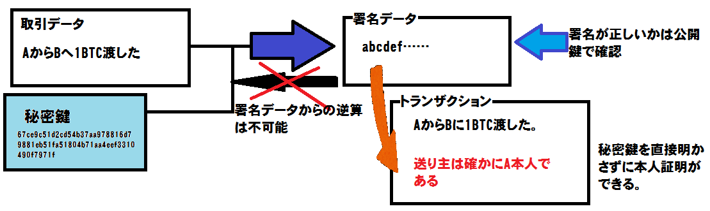

仮想通貨の取引の中で起きていること
ここまでで、仮想通貨のやり取りをするために私達がどのように操 作をすれば良いのかを学んできました。
しかし、私達がその操作をしている裏で、仮想通貨はどのように動いているのでしょうか？
ここからは、前ページ「取引の流れ」で紹介をした手順に合わせて、仮想通貨の仕組みについての説明をしつつ、実験を交えた仮想通貨のセキュリティ、すなわち「ニセ金対策」についての検証を行っていきます。
尚、ここでの説明は世界で最も普及しているビットコインに合わせたものであり、その他の仮想通貨の仕組みとは少し異なっている場合があります。
仮想通貨の口座と暗号による署名
前ページで、Aさんはまずウォレットを作成し、仮想通貨の口座を手に入れました。
すると、ウォレットに仮想通貨のアドレスが追加されます。ここに、サンプルとしてビットコインのアドレスを用意しました。
アドレス: 1D2o4RCjEZ3iNbkbkKtKvXW9ctaWkHCSAM
ビットコインの場合、アドレスは27~34桁の、1または3から始まる英数字で作られています。仮想通貨を送信したい場合は、このアドレスがわかれば誰でも仮想通貨を相手に送り届ける事ができます。
言い換えれば、このアドレスは自分が仮想通貨を受け取るための番号なのです。
一方で、仮想通貨を送信する側はどうするのでしょうか。前ページで触れたとおり、殆どのウォレットには仮想通貨の送信機能が備わっており、宛先と金額を入力すれば仮想通貨が相手のもとに送られます。
それでは、この時にウォレットの中では何が行われているのでしょうか。
実は、実際にその番号を見る機会はあまりありませんが、Aさんが作成した口座にはもう2つ、先程のアドレスに対応して送信のためにつかう文字列が登録されているのです。それは公開鍵、秘密鍵と呼ばれているものです。
公開鍵:0409ddf50fb8001b5bbd7d1dc77dd45314e36a3b8f86eda822128ba70573cbd0bd67e97436e0f9885776e1b43e66e40026f84cc7f8f453a1dc6d4f25cbd77edabe
秘密鍵:67ce9c51d2cd54b37aa978816d79881eb51fa51804b71aa4eef3310490f7971f
どちらもビットコインアドレスと比べると長い文字列ですが、ウォレットは最初に秘密鍵を作成し、それから公開鍵とアドレスを作り出しているのです。
というのも、公開鍵は秘密鍵に、ビットコインアドレスは公開鍵に、それぞれ特定の操作を行うことで作成されるからです。
これだけではわかりにくいので、かんたんな例を上げて説明をしましょう。
秘密鍵を「適当な1以上の整数」であるとした時に、公開鍵を「秘密鍵の数値に2をかけて5を足した数」、ビットコインアドレスを「公開鍵の数値に10をかけて7引いた数」と定義します。
すると秘密鍵が10のとき、公開鍵は10×2+5=25、ビットコインアドレスは25×10+7=257となります。
このように、秘密鍵から一定の法則で公開鍵とビットコインアドレスが造られるようになっているのです。
また、実際には複雑な計算を用いることで、ビットコインアドレスや公開鍵から秘密鍵への逆算が困難になるように出来ています。
仮想通貨の送信と不正対策
では、これらは仮想通貨のやり取りにおいてどのような役割を持っているのでしょうか。
公開鍵は、仮想通貨を送信する際に「送り主」であることを表すために用いられます。
メールを送信すると、送り先だけでなく送り主のメールアドレスもメールの情報として含まれるように、仮想通貨を送るときにも送り主の口座がやり取りの記録として残るようになっているのです。
このようにして仮想通貨の取引が行われると送り主と受け手の間で、「いつ」「誰が」「誰宛に」「いくら支払った」という情報が記録されます。
この情報を書き出したデータをトランザクション(英語で取引の意)と呼び、仮想通貨は世界中で行われているトランザクションをネットワーク上に保存し、仮想通貨による金銭のやり取りが可能なようにしているのです。
また、公開鍵がわかればビットコインアドレスも簡単に割り出せるため、過去に行われた取引の記録から、過去にその口座にどれくらい入金され、どれくらい使ったのかが分かるので、実際に持っている仮想通貨よりも多い金額を支払おうとしていないかをチェックすることも出来ます。
ここまでで、仮想通貨の取引が行われる仕組みを見てきましたが、実はこれだけでは重大な欠陥が残っているのです。
今の説明から分かる通り、取引データはネット上に保存され、誰でも過去に行われた取りにきのデータを確認する事ができます。
そしてそこには当然、受け取り主のアドレスと、送り主の公開鍵が記録されています。
つまり、公開鍵だけでは「第三者が他人の仮想通貨を勝手に使ってしまう」事ができるのです。
そのため、仮想通貨の取引において、「通貨を送信しようとしているのは仮想通貨の所持者本人なのか」を確認するための仕組みが必要になります。
ところで、現実で契約を行う際に、その契約が本人を確認するために契約者本人による直筆のサインや印鑑、拇印や血判などを用いる事があります。
それはそれらが第三者によって偽造することが出来ないため、確かに本人によって行われた取引である事を示す根拠になりうるからです。
仮想通貨の取引でも、同じように「本人以外には書くことの出来ない署名」を添えることによって本人であることを示せれば良いのですが、容易にコピーができるデジタルデータにおいて「真似が出来ない」署名を作るのは困難です。
そこで、秘密鍵を用いることでデジタルデータへの「署名」を行う事ができるようにします。
署名には楕円曲線DSAという技術が使われ、この説明の為には高度な数学の知識が必要になるので、ここでは詳細は省きますが、取引のデータと秘密鍵の二つを用いて計算することで、「署名データ」を作ることが出来ます。
その署名データは送信者の公開鍵を用いて確認の為の計算をすることで正しいことが確認できるため、通貨の送信が本人に行われる事がわかるという仕組みです。
ここでのポイントは、「相手の秘密鍵を知らなくても、署名が正しければ相手が秘密鍵を持っている事がわかる」という点にあります。
内容がわからない物をコピーするものは不可能なので、誰かが秘密鍵をコピーすることはできず、秘密鍵を誰かに教えない限りはその署名はたしかに本人にしか行えないのです。

このようにして、仮想通貨にはなりすましを防止しつつ、取引を記録していく仕組みが造られているのです。
ここまでのまとめと補足
このページで学んだことをおさらいしてみましょう。
「仮想通貨の口座はアドレス、公開鍵、秘密鍵の3つから成っている」
「公開鍵とアドレスは、秘密鍵を元にして生成されている」
「アドレスは通貨を受け取るため、公開鍵は通貨を送るため、秘密鍵はデータを署名する為に存在する」
また、数回だけでは分からなくても、同じ秘密鍵を何回も使いまわしていると署名データから規則性を見つけて秘密鍵が特定されてしまう可能性があります。
そのため、秘密鍵は定期的に新しいものを発行する必要があり、秘密鍵を発行するたびに新しい口座がつくられます。
そうして何個もあるウォレットをまとめて管理するもウォレットの役割なのです。
そしてもう一つ、ここからは仮想通貨を成り立たせる上で重要な「ブロックチェーン」という技術による不正の対策と、仮想通貨が発行される仕組みについての話をしていきます。